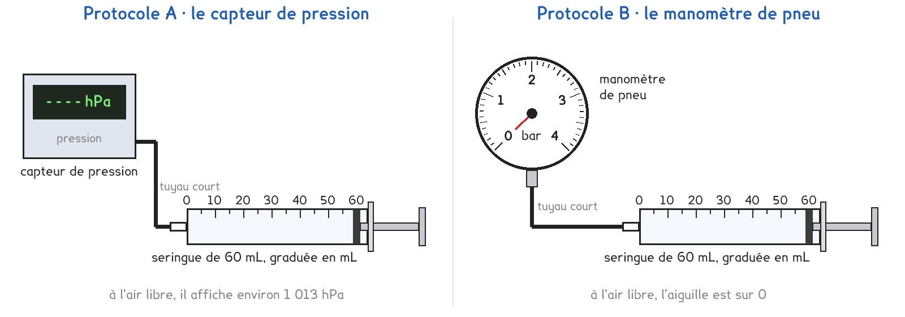

1re Bac Pro · toutes spécialités · TP commun CT-04
Pourquoi la pompe à vélo devient-elle si dure en fin de course ?
1 figure
Sujet. On gonfle un pneu de vélo à la pompe. Au début, le piston s’enfonce sans effort ; en fin de course, il faut appuyer de tout son poids. Pourtant, c’est toujours le même air.
Problématique : pourquoi la pompe à vélo devient-elle si dure en fin de course ?
Au laboratoire, la pompe est remplacée par une seringue de 60 mL reliée à un appareil de mesure : l’air y est enfermé, on le comprime et on mesure sa pression.

1 bar = 1 000 hPa = 100 000 Pa. Le pascal, Pa, est l’unité du système international.
a) Convertir les pressions. La première est faite.
| 1 013 hPa | 2,5 bar | 150 kPa | 101 300 Pa |
|---|---|---|---|
| 1,013 bar | ………… hPa | ………… bar | ………… bar |
L’air qui nous entoure appuie sur tout ce qu’il touche : c’est la pression atmosphérique.
b) Au niveau de la mer, elle vaut environ, entourer :
0,1 bar · 1 bar · 10 bar · 100 bar
Deux protocoles répondent à la même question. Une partie de la classe prend A, l’autre prend B, et on compare à la fin.
Protocole A · le capteur de pression. Il mesure la pression absolue, comptée à partir du vide. À l’air libre, il affiche la pression atmosphérique, environ 1 013 hPa.
Protocole B · le manomètre de pneu. Il mesure la pression relative, l’écart avec l’air qui l’entoure. À l’air libre, il affiche 0.
c) Compléter le tableau pour comparer les deux protocoles.
| Protocole A | Protocole B | |
|---|---|---|
| Ce qu’il affiche à l’air libre | ………………… | ………………… |
| L’unité affichée | ………………… | ………………… |
| Pour avoir la pression absolue | rien · ajouter 1 bar | rien · ajouter 1 bar |
Un pneu de voiture est gonflé à 2 bar, lus sur le manomètre de la station-service.
d) Quelle est la pression absolue de l’air dans ce pneu ? Justifier.
On choisit avant de toucher au matériel ; le professeur peut imposer celui qui reste libre.
e) Quel protocole prenez-vous ? Justifier en une phrase.
Je prends le protocole ……… parce que ……………………………………………………………………
f) Hypothèse : si le volume d’air est divisé par deux, sa pression absolue…
ne change pas · est divisée par deux · double · est multipliée par quatre
Avant de commencer
Aucune aiguille : l’embout de la seringue reçoit seulement le tuyau.
On ne descend jamais sous 30 mL : la force passerait 60 N et le tuyau pourrait sauter.
Lunettes sur le nez. On relâche le piston doucement, en le retenant.
g) Schématiser le dispositif, et hachurer tout l’air enfermé.
Le schéma se dessine sur la feuille du TP.
h) Relever les pressions, puis calculer p × V. Écrire l’unité de la lecture.
| Volume V (mL) | 60 | 50 | 40 | 30 |
|---|---|---|---|---|
| Lecture, avec l’unité | ||||
| p absolue (bar) | ||||
| p × V (bar·mL) |
i) Le produit p × V reste-t-il constant ? De combien varie-t-il de 60 à 30 mL ?
j) Un groupe de l’autre protocole trouve-t-il les mêmes pressions absolues ?
En B, que deviendrait p × V sans ajouter 1 bar ? ………………………………………………………
Le volume d’air du tuyau et de l’appareil, Vt, est noté sur l’étiquette du poste.
k) Recalculer p × (V + Vt) pour 60 mL et pour 30 mL. Conclure.
Vt = ……… mL · à 60 mL : ……………… · à 30 mL : ………………
l) Répondre à la problématique en deux phrases.
Ce que ce TP a établi, et qui vaut pour tout gaz enfermé à température constante :
À RETENIR
Pression absolue = pression relative + pression atmosphérique, environ 1 bar.
Un manomètre de pneu affiche la pression relative.
1 bar = 1 000 hPa = 100 000 Pa. L’unité du système international est le pascal.
Loi de Boyle-Mariotte : pour un gaz enfermé, à température constante, p × V reste constant, p étant la pression absolue. Diviser le volume par deux double la pression.
Le piston de la seringue a une surface de 5,6 cm², soit 0,00056 m². À 30 mL, l’air enfermé le repousse avec une pression de 1 bar de plus que l’air extérieur. Avec F = p × S, entourer la force qu’il faut fournir.
environ 6 N · environ 60 N · environ 600 N
TP commun de physique-chimie, toutes spécialités. Le travail se fait sur la feuille du TP : cette page en est la version à l'écran, sans les lignes à remplir. Rien n'est enregistré.